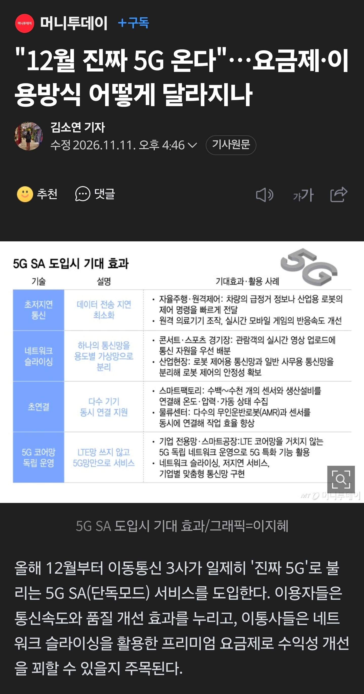
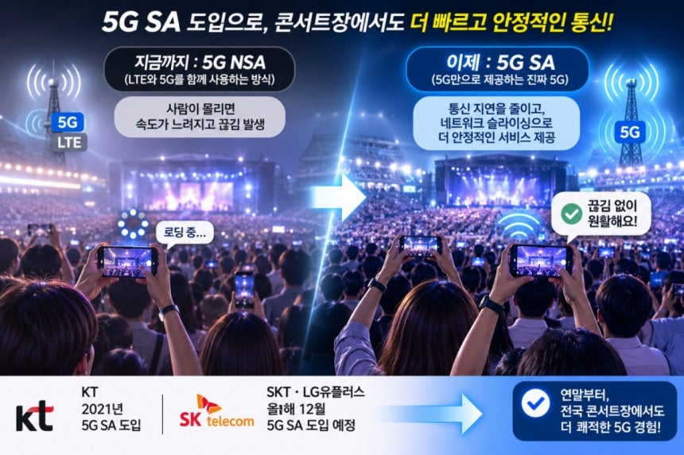

https://n.news.naver.com/mnews/article/008/0005439791


https://n.news.naver.com/mnews/article/008/0005439791


과연 바꾼다고 생각해???
기레기 근들갑인 거 같은데
예전에 HD Voice 같은거 유료로 팔아먹으려고 했다 파투난 거 생각한 거 같은데 kt는 5년전부터 슬그머니 SA 도입해서 써먹고 있었음
난 LTE지만
그 HD보이스 유료화 SKT가 간보려다가 LG U+가 그냥 무료로 풀어버려서 컷 났던거 맞음
그땐 목 마른 자가 우물을 판다고 LG U+가 3G WCDMA 망이 없어서 VoLTE 전환이 시급하고 타사 좋으라고 따라줄 필요도 없었으니
KT의 5G SA 도입도 상대적으로 LTE 망 씹창이라 자발적으로 빨리 도입했던거고 나머지 타사는 정부 개입 없었으면 몇년 뒤에나 했을꺼라 생각함 ㅋㅋㅋㅋ
그렇지 그래서 SA를 유료로는 못 풀다고 생각함
kt가 이미 SA를 풀었는데
5G SA 명목으로는 받긴 힘들테고 통합요금제 ㅇㅈㄹ 하면서 개악 시킨것처럼 빌드업 쌓아서 다른 명목으로 쳐올릴 궁리할듯
자랄말라그래 ㅋㅋㅋ
프리미엄 요금제 ㅋㅋㅋㅋㅋㅋㅋ
지금까지 5g요금제 받아먹던거 뱉어라
진짜 5G라면 이제까진 가짜로 사기친거야?
아니 kt는 2021년부터 도입했다는데 방금까지도 lte 잡앗는데 뭔소리하는거냐 진짜
집에서도 가끔 lte 터지는데
'담합하면 개꿀인데 우리끼리 경쟁을 왜 해?ㅋㅋ'
ㅋㅋㅋ이제 진짜 5G시대다 광고하면서 요금제 인상하겠네
5g쓰고있는데 프리미엄 요금제를 써야 진짜5g를 준다고?!
그럼 우리가 지금까지 몇 년 동안 냈던 요금제는 뭔데?
ㅅㅂ 지랄한다
예 지랄 마세요
일본에서 쓰고 있는데 별로 달라진게 없는거 같애
여태까지는 가짜5G였다고 인정하는 것이냐?
이 때까지 5g라고 구라치고 요금제를 받아 쳐먹어놓고 돈을 올린다고? ㅋㅋㅋㅋㅋ
아 알뜰요금제로 가야되는데 약정도 끝난마당에
난 아직 4G 요금제얌 월 2마넌 내고 잇서
한 번 속지 두 번 속아야해?
그럼 지금까진 가짜 5G였단거야? 그래놓고 요금을 ㅋㅋㅋㅋㅋㅋㅋㅋㅋ
십새들이 이제 처 바꾸네